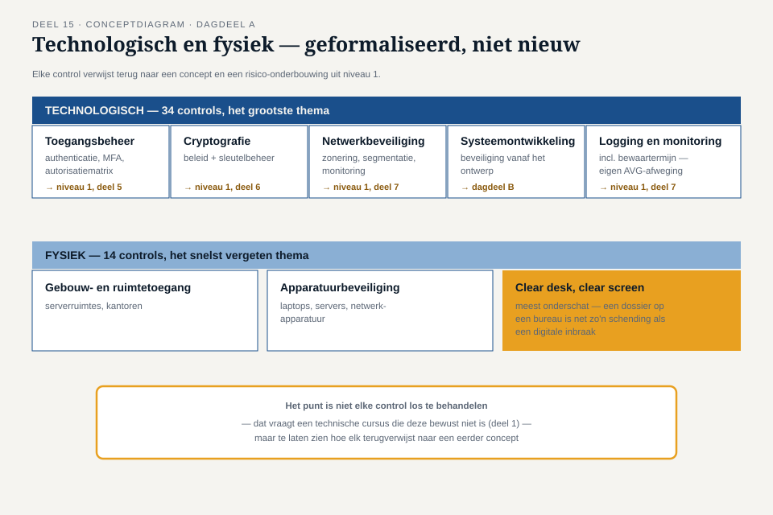

Deel 15 — Annex A II: technologische en fysieke controls, en beveiliging in het ontwerp
Reader · Ductus-cursus Informatiebeveiliging en privacy · niveau 2 (professional) · deel 15 van 22
Casusopening: het gesprek dat te laat kwam
Drie weken voor de geplande livegang van de eerste release van het Mutatieplatform vraagt Merel voor het eerst grondig mee te kijken naar het ontwerp. Tarik is verrast: "Ik dacht dat security aan het eind kwam, als check." Merel: "Als ik nu pas kijk, kan ik alleen nog maar dingen afkeuren die je al gebouwd hebt. Dat is duur, laat, en het went nooit — over twee jaar zit ik weer in dit gesprek." Dit deel behandelt eerst de technologische en fysieke controls van Bijlage A zelf (dagdeel A), en gaat dan naar de vraag die Merels opmerking oproept: hoe zorg je dat beveiliging en privacy niet een check aan het eind zijn, maar ontwerpeisen vanaf dag één (dagdeel B)?
Dagdeel A — De controls zelf
1. Technologische controls: het grootste thema van Bijlage A
De 34 technologische controls vormen het grootste van de vier thema's uit Bijlage A (deel 11) en bouwen grotendeels voort op wat niveau 1 al introduceerde, nu geformaliseerd binnen het ISMS:
- Toegangsbeheer — de formele, geauditeerde versie van authenticatie, autorisatie, MFA en de autorisatiematrix uit deel 5.
- Cryptografie — een vastgesteld cryptografisch beleid (zie de Verklaring van Toepasselijkheid-oefening uit deel 11), inclusief sleutelbeheer zoals behandeld in deel 6.
- Netwerkbeveiliging — zonering, segmentatie en monitoring, formeel vastgelegd in plaats van "Ruuds plattegrond" uit deel 7.
- Beveiliging van systeemontwikkeling — hoe beveiliging wordt meegenomen in de bouw van nieuwe systemen, het onderwerp van dagdeel B van dit deel.
- Logging en monitoring — de formele inrichting van wat in deel 7 als concept werd geïntroduceerd, inclusief bewaartermijnen voor logs zelf (die, zoals deel 7 al aangaf, een eigen AVG-afweging vragen).
Het punt van dagdeel A is niet om elke control afzonderlijk te behandelen — dat zou een technische cursus vereisen die deze cursus bewust niet is (zie de afbakening uit deel 1) — maar om te laten zien hoe deze controls, geformaliseerd binnen het ISMS, elk terugverwijzen naar een concept en een risico-onderbouwing uit een eerder deel.
2. Fysieke controls: het thema dat het snelst wordt vergeten
De 14 fysieke controls omvatten toegang tot gebouwen en serverruimtes, beveiliging van apparatuur, en een onderwerp dat vaak wordt onderschat: een opgeruimde-werkplekbeleid (clear desk, clear screen) — geen documenten met persoonsgegevens onbeheerd op een bureau, computers vergrendeld bij het weglopen. Dit lijkt triviaal vergeleken met cryptografie of netwerkzonering, maar is in de praktijk een van de meest voorkomende bronnen van onbedoelde datalekken: een bezoeker die toevallig een deelnemersdossier op een bureau ziet liggen, is net zo'n schending van vertrouwelijkheid als een digitale inbraak, alleen minder spectaculair en daarom makkelijker te vergeten.
Fysieke en technologische controls samen laten zien dat een ISMS niet alleen over digitale systemen gaat — de "systemen" uit deel 7 hebben altijd ook een fysieke laag, en die laag verdient evenveel discipline.
Dagdeel B — Beveiliging in het ontwerp
3. Waarom "aan het eind" te laat is
Merels opmerking in de opening vat het kernprobleem samen: als beveiliging pas wordt beoordeeld nadat een systeem is gebouwd, zijn de opties beperkt tot afkeuren (duur, want alles moet worden herbouwd) of accepteren met tegenzin (riskant, want het risico verdwijnt niet door het te negeren). Dit patroon herhaalt zich keer op keer, omdat de onderliggende oorzaak — beveiliging als nagedachte in plaats van als ontwerpeis — nooit wordt aangepakt.
Security by design betekent dat beveiligingsoverwegingen vanaf de eerste ontwerpkeuzes worden meegenomen, niet achteraf getoetst. Privacy by design is het AVG-equivalent — een wettelijk verankerd beginsel dat vereist dat passende technische en organisatorische maatregelen al bij het ontwerpen van een verwerking worden meegenomen, niet pas bij oplevering. Beide zijn, net als in deel 1, nauw verwant maar niet identiek: security by design vraagt "hoe zou dit systeem kunnen worden aangevallen", privacy by design vraagt "hoe zou dit ontwerp persoonsgegevens onnodig kunnen blootstellen of te ruim kunnen verzamelen" — en beide vragen horen in hetzelfde ontwerpgesprek thuis, niet in twee gescheiden trajecten.
4. Dreigingsmodellering
Dreigingsmodellering (threat modeling) is een gestructureerde manier om, tijdens het ontwerp, systematisch te redeneren over wat er mis zou kunnen gaan. Een veelgebruikte, toegankelijke aanpak stelt vier vragen:
- Waar werken we aan? — een overzicht van het systeem, de gegevensstromen en de vertrouwensgrenzen (waar gaat data van het ene naar het andere zonevertrouwen, deel 7).
- Wat kan er misgaan? — systematisch redeneren over dreigingen, bijvoorbeeld via de aanvalsfasering uit deel 2 of een gestructureerd raamwerk van dreigingscategorieën.
- Wat gaan we eraan doen? — voor elke geïdentificeerde dreiging: welke maatregel (een van de vier behandelopties uit deel 12) wordt gekozen?
- Hebben we goed werk geleverd? — een terugblik: is het model compleet genoeg, en is het proces zelf waardevol geweest?
Het belangrijkste verschil met de risicobeoordeling uit deel 12: dreigingsmodellering vindt plaats tijdens het ontwerp, op het niveau van een specifiek systeem of een specifieke gegevensstroom, met de architect en ontwikkelaars zelf aan tafel — niet als een apart traject dat de securityfunctie los uitvoert en achteraf oplegt.
5. Misuse cases
Waar een reguliere use case beschrijft hoe een systeem bedoeld wordt gebruikt ("een deelnemer wijzigt zijn adres via het portaal"), beschrijft een misuse case hoe een kwaadwillende of onzorgvuldige partij het systeem juist zou kunnen misbruiken ("een aanvaller probeert het adres van een andere deelnemer te wijzigen door het deelnemersnummer in de URL aan te passen"). Door misuse cases naast reguliere use cases te ontwerpen, wordt beveiliging een expliciet onderdeel van hetzelfde ontwerpgesprek, in plaats van een aparte, latere toetsing.
Voor het Mutatieplatform stelt Merel, samen met Tarik en het ontwikkelteam, bij elke nieuwe functionaliteit standaard de vraag: "wat is de misuse case hierbij, en wie zou hiervan garen kunnen spinnen op een manier die we niet bedoelen?" — een vraag die rechtstreeks aansluit bij need-to-know (deel 5) en doelbinding (deel 3): niet alleen wat een gebruiker zou moeten kunnen, maar ook wat een systeem, per ongeluk, toch mogelijk maakt.
6. Het gesprek met de architect
Dreigingsmodellering en misuse cases zijn instrumenten; het echte verschil wordt gemaakt door het gesprek dat ze mogelijk maken. Merel stelt voor het Mutatieplatform een vast ritueel voor: bij elke nieuwe functionele module, vóórdat de bouw begint, een kort (maximaal een uur) gestructureerd gesprek met Tarik en de betrokken ontwikkelaars, waarin de vier dreigingsmodelleringsvragen en minstens twee misuse cases worden doorlopen. Dit is aanzienlijk goedkoper — in tijd en in bouwwerk dat mogelijk moet worden aangepast — dan het late, spanningsvolle gesprek uit de opening van dit deel.
Dit ritueel is ook de plek waar de spanning uit deel 1 (paragraaf 2, de derde zone) concreet wordt: security en privacy by design kunnen elkaar versterken, maar soms ook botsen — bijvoorbeeld wanneer uitgebreide logging (goed voor forensisch onderzoek na een incident, dus goed voor security by design) botst met minimale gegevensverwerking (goed voor privacy by design). Dit gesprek is precies de plek waar die afweging expliciet en samen wordt gemaakt, in plaats van dat de ene discipline de andere overrulet zonder overleg.
